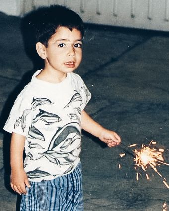

<!DOCTYPE html>
<html lang="en">
<!--
  index.html
  Personal site for Sebastián — Dieter Rams / Bauhaus aesthetic

  File structure:
    index.html      ← this file
    style.css       ← all styles
    main.js         ← French Republican calendar, panel switching, D3 flight
    assets/
      portrait.jpg  ← main profile photo (default right panel)
      cdmx.jpg      ← childhood photo (Mexico City panel)
      (no image asset needed for espresso panel — SVG dial is self-contained)

  Layout:
    Two equal columns filling the viewport (CSS grid, no scroll).
    Left  — biography with hoverable words that trigger right-panel swaps.
    Right — panels stacked via position:absolute; only one is visible at a time.

  Panels (right column), keyed by data-panel attribute on .hl words:
    panel-default   — portrait photo; shown when nothing is hovered
    panel-professor — courses taught
    panel-developer — programming language proficiency (chip treatment)
    panel-mexico    — childhood photo from Mexico City
    panel-moved     — D3 animated flight path CDMX to NYC
    panel-nyu       — degrees from NYU Tandon
    panel-music     — instrument proficiency (chip treatment)
    panel-espresso  — SVG extraction dial with draggable needle
    panel-contact   — GitHub, LinkedIn, email
    panel-lang-ja   — bio in Japanese
    panel-lang-cs   — bio in Czech
    panel-lang-la   — bio in Classical Latin
-->
<head>
  <meta charset="UTF-8" />
  <meta name="viewport" content="width=device-width, initial-scale=1.0" />
  <title>Sebasti&#225;n</title>

  <!-- Fonts: IBM Plex Sans (body) + IBM Plex Mono (labels, captions, indices) -->
  <link rel="preconnect" href="https://fonts.googleapis.com" />
  <link rel="preconnect" href="https://fonts.gstatic.com" crossorigin />
  <link
    href="https://fonts.googleapis.com/css2?family=IBM+Plex+Mono:wght@300;400&family=IBM+Plex+Sans:wght@300;400;500&display=swap"
    rel="stylesheet"
  />

  <!-- Site styles -->
  <link rel="stylesheet" href="style.css" />

  <!--
    D3 v7 — loaded in head so it is available when main.js runs.
    Used only for the flight animation (panel-moved).
  -->
  <script src="https://cdnjs.cloudflare.com/ajax/libs/d3/7.8.5/d3.min.js"></script>
</head>

<body>
<div class="site">


  <!-- ====================================================================
       LEFT COLUMN — Biography
       The static half. Contains the name, bio paragraphs, Republican date,
       and footer links. Hovering .hl words swaps the right panel.
       ==================================================================== -->
  <div class="left">

    <!-- Section index strip: label + extending hairline rule -->
    <div class="left-index">
      <span class="left-index-label" id="left-index-label">01 / README.md</span>
      <div class="left-index-rule"></div>
    </div>

    <!--
      Name heading.
      The trailing period is wrapped in <em> and coloured red in CSS
      — the only purely decorative element on the left side.
    -->
    <h1 class="name-heading">Sebasti&#225;n<em>.</em></h1>


    <!--
      Bio paragraphs.

      .hl words — hoverable, trigger panel swap via data-panel attribute.
                  Styled with a dotted red underline; solid red when active.

      .bio-link  — regular hyperlinks (GitHub repos). Same visual style as
                   .hl but use <a> tags and open in a new tab.

      Paragraph breakdown:
        1. Intro: role and location
        2. Work scope: teaching focus + links to repos
        3. Interests: languages, music, espresso
        4. Contact: GitHub, LinkedIn, email
    -->
    <p class="bio">
      I am a Brooklyn-based computer science
      <span class="hl" data-panel="professor">professor</span>
      and <span class="hl" data-panel="developer">programmer</span>.
      I was born in <span class="hl" data-panel="mexico">Mexico City</span>,
      and later <span class="hl" data-panel="moved">moved</span> to New York,
      where I studied at <span class="hl" data-panel="nyu">NYU</span>.
    </p>

    <p class="bio">
      Although I mostly deal in the
      <a class="bio-link" href="https://github.com/sebastianromerocruz/CS1134-data-structures-and-algorithms?tab=readme-ov-file#cs-uy-1134-material" target="_blank">introductory</a>
      and <a class="bio-link" href="https://github.com/sebastianromerocruz/CS3113-Intro-To-Game-Programming?tab=readme-ov-file#cs-uy-3113-introduction-to-game-programming" target="_blank">video game programming</a>
      pedagogy space, I also have experience in other areas of
      <a class="bio-link" href="https://github.com/sebastianromerocruz/game-programming-in-assembly?tab=readme-ov-file#october-13th-2022" target="_blank">computer</a>
      <a class="bio-link" href="https://github.com/sebastianromerocruz/sonic-pi-lecture?tab=readme-ov-file#music-with-programming" target="_blank">science</a>.
    </p>

    <p class="bio">
      Outside of work, some of my interests involve
      <span class="hl" data-panel="lang-ja">learning</span>
      <span class="hl" data-panel="lang-cs">foreign</span>
      <span class="hl" data-panel="lang-la">languages</span>,
      <span class="hl" data-panel="music">music</span>,
      and obsessing over <span class="hl" data-panel="espresso">espresso</span>.
    </p>

    <p class="bio">
      Students can schedule office hours with me
      <a class="bio-link" href="https://calendly.com/profromerocruz/office-hours" target="_blank">here.</a>
      You can find me on <span class="hl" data-panel="contact">GitHub</span>
      if you would like to check out my work,
      on <span class="hl" data-panel="contact">LinkedIn</span>,
      or via <span class="hl" data-panel="contact">e-mail</span>.
    </p>

    <!-- Footer: persistent quick-links at the bottom of the left column -->
    <div class="left-footer">
      <a href="https://github.com/sebastianromerocruz">GitHub</a>
      <a href="https://linkedin.com/in/sebastian-romerocruz">LinkedIn</a>
      <a href="mailto:s.romerocruz@proton.me">Email</a>
    </div>


  </div><!-- /.left -->


  <!-- ====================================================================
       RIGHT COLUMN — Panels
       All panels share the same grid cell (position:absolute, inset:0).
       Only the panel with class .active is visible.
       main.js handles activation; CSS handles the fade/slide transition.
       ==================================================================== -->
  <div class="right">


    <!-- ==================================================================
         DEFAULT PANEL — Portrait photo
         Shown on page load and whenever no .hl word is hovered.

         To replace the placeholder with a real photo:
           1. Remove the .default-photo-fill div.
           2. Add inside .default-photo-main:
                
         ================================================================== -->
    <div class="panel panel-default active" id="panel-default">

      <!--
        Ghosted Bauhaus geometric mark — concentric circles, cross, diagonals,
        red square centre. Renders at 4% opacity as a background texture.
      -->
      <div class="default-geo-bg">
        <svg viewBox="0 0 120 120" fill="none" xmlns="http://www.w3.org/2000/svg"
             aria-hidden="true">
          <circle cx="60" cy="60" r="58" stroke="#0c0c0c" stroke-width="0.5"/>
          <circle cx="60" cy="60" r="35" stroke="#0c0c0c" stroke-width="0.5"/>
          <circle cx="60" cy="60" r="12" stroke="#0c0c0c" stroke-width="0.5"/>
          <line x1="60"  y1="2"   x2="60"  y2="118" stroke="#0c0c0c" stroke-width="0.5"/>
          <line x1="2"   y1="60"  x2="118" y2="60"  stroke="#0c0c0c" stroke-width="0.5"/>
          <line x1="18"  y1="18"  x2="102" y2="102" stroke="#0c0c0c" stroke-width="0.5"/>
          <line x1="102" y1="18"  x2="18"  y2="102" stroke="#0c0c0c" stroke-width="0.5"/>
          <rect x="55" y="55" width="10" height="10" stroke="#cc3320" stroke-width="0.8"/>
        </svg>
      </div>

      <!-- Photo frame with offset shadow border -->
      <div class="default-photo-frame">
        <div class="default-photo-shadow"></div>
        <div class="default-photo-main">
          <!--
            Real photo — uncomment when asset is in place:
            
          -->

        </div>
        <div class="default-caption">Sebasti&#225;n · Romero Cruz</div>
      </div>


      <!--
        Personal motto: 諸行無常 (shōgyō mujō) — all things are impermanent.
        Displayed as UTF-8 hex bytes matching the email signature format.
        Hovering reveals the kanji beneath.
      -->
      <div class="motto" id="motto" title="&#35504;&#34892;&#28961;&#24120;">
        <pre class="motto-hex" aria-label="E8 AB B8 E8 A1 8C E7 84 A1 E5 B8 B8 — shōgyō mujō">;;;;;;;;;;;;;;;;;;;;;;;
;; E8 AB B8 E8 A1 8C ;;
;; E7 84 A1 E5 B8 B8 ;;
;;;;;;;;;;;;;;;;;;;;;;;</pre>
        <span class="motto-kanji" aria-hidden="true">&#35504;&#34892;&#28961;&#24120;</span>
      </div>

    </div><!-- /#panel-default -->


    <!-- ==================================================================
         PROFESSOR PANEL — Courses taught
         Triggered by hovering "professor" in the bio.
         ================================================================== -->
    <div class="panel" id="panel-professor">
      <div class="panel-bar"></div>
      <div class="panel-index">02 / Teaching</div>
      <h2 class="panel-title">Courses</h2>

      <div class="courses-list">
        <div class="course-item">
          <div class="course-code">CS-UY 1113/4</div>
          <div class="course-name">Programming &amp; Problem-Solving I</div>
        </div>
        <div class="course-item">
          <div class="course-code">CS-UY 1121</div>
          <div class="course-name">Programming &amp; Problem-Solving II</div>
        </div>
        <div class="course-item">
          <div class="course-code">CS-UY 1134</div>
          <div class="course-name">Data Structures &amp; Algorithms</div>
        </div>
        <div class="course-item">
          <div class="course-code">CS-UY 2214</div>
          <div class="course-name">Computer Architecture &amp; Organization</div>
        </div>
        <div class="course-item">
          <div class="course-code">CS-UY 3113</div>
          <div class="course-name">Introduction to Game Programming</div>
        </div>
      </div>
      <!-- Institutional affiliations — abbreviated, separated by middot -->
      <div class="prof-affil">
        <span class="prof-affil-item">Tandon</span>
        <span class="prof-affil-dot">&middot;</span>
        <span class="prof-affil-item">Courant</span>
      </div>
    </div><!-- /#panel-professor -->


    <!-- ==================================================================
         DEVELOPER PANEL — Programming language proficiency
         Triggered by hovering "developer" in the bio.

         Chip system (see style.css section 7b):
           .chip-solid   = fluent     (solid black fill, white text)
           .chip-outline = proficient (outline only, black text)
           .chip-ghost   = exploring  (faint grey border and text)
         ================================================================== -->
    <div class="panel" id="panel-developer">
      <div class="panel-bar"></div>
      <div class="panel-index">03 / Practice</div>
      <h2 class="panel-title">Languages</h2>

      <div class="chip-group">
        <div class="chip-row">
          <span class="chip-row-label">Main</span>
          <div class="chip-items">
            <span class="chip chip-solid">Python</span>
            <span class="chip chip-solid">Java</span>
          </div>
        </div>
        <div class="chip-row">
          <span class="chip-row-label">Secondary</span>
          <div class="chip-items">
            <span class="chip chip-outline">C++</span>
            <span class="chip chip-outline">C</span>
            <span class="chip chip-outline">C#</span>
          </div>
        </div>
        <div class="chip-row">
          <span class="chip-row-label">Exploring</span>
          <div class="chip-items">
            <span class="chip chip-ghost">Haskell</span>
          </div>
        </div>
      </div>
    </div><!-- /#panel-developer -->


    <!-- ==================================================================
         MEXICO CITY PANEL — Childhood photo
         Triggered by hovering "Mexico City" in the bio.

         To replace the placeholder with a real photo:
           1. Remove the .photo-fill div.
           2. Add inside .photo-border-main:
                
         ================================================================== -->
    <div class="panel photo-panel" id="panel-mexico">
      <div class="panel-bar"></div>

      <div class="photo-frame">
        <div class="photo-border-shadow"></div>
        <div class="photo-border-main">
          <!--
            Real photo — uncomment when asset is in place:
            
          -->

        </div>
        <div class="photo-caption">Xalapa, Veracruz · c. Mid-90s</div>
      </div>
    </div><!-- /#panel-mexico -->


    <!-- ==================================================================
         FLIGHT PANEL — Animated arc from Mexico City to New York
         Triggered by hovering "moved" in the bio.

         D3 draws into #flight-svg on first activation (runs only once).
         The .flight-overlay label sits on top of the SVG.
         ================================================================== -->
    <div class="panel flight-panel" id="panel-moved">
      <div class="panel-bar"></div>

      <!-- Text overlay — sits above the SVG via document stacking order -->
      <div class="flight-overlay">
        <div class="panel-index">05 / Relocation</div>
        <h2 class="panel-title" style="font-size: clamp(1.5rem, 3vw, 2.6rem);">
          MEX<br>&#8594; <em>JFK</em>
        </h2>
      </div>

      <!-- D3 renders its grid, path, markers, and plane into this element -->
      <svg id="flight-svg" aria-label="Flight path from Mexico City to New York"></svg>

    </div><!-- /#panel-moved -->


    <!-- ==================================================================
         NYU PANEL — Degrees
         Triggered by hovering "NYU" in the bio.
         ================================================================== -->
    <div class="panel" id="panel-nyu">
      <div class="panel-bar"></div>
      <div class="panel-index">06 / Education</div>
      <h2 class="panel-title">Degrees</h2>

      <div class="degrees">
        <div class="degree-card">
          <div class="degree-gpa">GPA 3.4</div>
          <div class="degree-year">BSc · 2017</div>
          <div class="degree-name">Chemical &amp; Biomolecular Engineering</div>
          <div class="degree-sub">Tandon School of Engineering</div>
        </div>
        <div class="degree-card">
          <div class="degree-gpa">GPA 3.8</div>
          <div class="degree-year">MSc · 2020</div>
          <div class="degree-name">Computer Science</div>
          <div class="degree-sub">Tandon School of Engineering</div>
        </div>
      </div>
    </div><!-- /#panel-nyu -->


    <!-- ==================================================================
         MUSIC PANEL — Instrument proficiency
         Triggered by hovering "music" in the bio.
         Same chip system as the developer panel.
         ================================================================== -->
    <div class="panel" id="panel-music">
      <div class="panel-bar"></div>
      <div class="panel-index">07 / Music</div>
      <h2 class="panel-title">Instruments</h2>

      <div class="chip-group">
        <div class="chip-row">
          <span class="chip-row-label">Mastered</span>
          <div class="chip-items">
            <span class="chip chip-solid">Bass</span>
          </div>
        </div>
        <div class="chip-row">
          <span class="chip-row-label">Secondary</span>
          <div class="chip-items">
            <span class="chip chip-outline">Guitar</span>
          </div>
        </div>
        <div class="chip-row">
          <span class="chip-row-label">Developing</span>
          <div class="chip-items">
            <span class="chip chip-ghost">Piano</span>
            <span class="chip chip-ghost">Music programming</span>
          </div>
        </div>
      </div>
    </div><!-- /#panel-music -->


    <!-- ==================================================================
         ESPRESSO PANEL — Extraction dial
         Triggered by hovering "espresso" in the bio.

         An SVG semicircular gauge spanning UNDER → SWEET → OVER.
         A draggable needle lets the visitor explore the spectrum.
         Descriptors below update live as the needle moves.

         The dial is drawn and made interactive entirely by main.js (section 5).
         The SVG element is empty on load; JS populates it on panel activation.
         ================================================================== -->
    <div class="panel" id="panel-espresso">
      <div class="panel-bar"></div>
      <div class="panel-index">08 / Espresso</div>

      <!-- Dial SVG — populated by initDial() in main.js -->
      <svg id="espresso-dial"
           viewBox="0 0 320 200"
           aria-label="Espresso extraction dial"></svg>

      <!-- Live descriptor block — text updated by JS as needle moves -->
      <div class="espresso-descriptors">
        <div class="espresso-zone-label" id="espresso-zone"></div>
        <div class="espresso-notes"     id="espresso-notes"></div>
      </div>

      <!-- Static parameters row — current dial-in target -->
      <div class="espresso-params">
        <div class="espresso-param">
          <span class="espresso-param-label">Dose</span>
          <span class="espresso-param-value">18&#8239;g</span>
        </div>
        <div class="espresso-param">
          <span class="espresso-param-label">Yield</span>
          <span class="espresso-param-value">36&#8239;g</span>
        </div>
        <div class="espresso-param">
          <span class="espresso-param-label">Time</span>
          <span class="espresso-param-value">27&#8239;s</span>
        </div>
        <div class="espresso-param">
          <span class="espresso-param-label">Temp</span>
          <span class="espresso-param-value">93&#8239;&#176;C</span>
        </div>
      </div>

      <!--
        Current bag — update these values whenever you move to a new coffee.
        Source: https://copticlight.org/products/coffee-10-oz-guayacan-peru
      -->
      <div class="espresso-bag">
        <div class="espresso-bag-header">Current bag</div>
        <div class="espresso-bag-grid">
          <span class="espresso-bag-key">Name</span>
          <span class="espresso-bag-val">Guayac&#225;n</span>
          <span class="espresso-bag-key">Roaster</span>
          <span class="espresso-bag-val">Coptic Light</span>
          <span class="espresso-bag-key">Origin</span>
          <span class="espresso-bag-val">Peru, Cajamarca</span>
          <span class="espresso-bag-key">Elevation</span>
          <span class="espresso-bag-val">1200&#8211;1900&#8239;masl</span>
          <span class="espresso-bag-key">Process</span>
          <span class="espresso-bag-val">Washed</span>
          <span class="espresso-bag-key">Variety</span>
          <span class="espresso-bag-val">Bourbon, Caturra, Catua&#237;</span>
        </div>
      </div>

    </div><!-- /#panel-espresso -->


    <!-- ==================================================================
         CONTACT PANEL
         Triggered by hovering "GitHub", "LinkedIn", or "e-mail" in the bio.
         ================================================================== -->
    <div class="panel" id="panel-contact">
      <div class="panel-bar"></div>
      <div class="panel-index">09 / Contact</div>
      <h2 class="panel-title">Connect</h2>

      <div class="contact-links">
        <a href="https://github.com/sebastianromerocruz" class="contact-link" target="_blank">
          GitHub
          <span class="contact-handle">@sebastianromerocruz &#8594;</span>
        </a>
        <a href="https://linkedin.com/in/sebastian-romerocruz" class="contact-link" target="_blank">
          LinkedIn
          <span class="contact-handle">/in/sebastian-romerocruz &#8594;</span>
        </a>
        <a href="mailto:s.romerocruz@proton.me" class="contact-link">
          Email
          <span class="contact-handle">s.romerocruz@proton.me &#8594;</span>
        </a>
      </div>
    </div><!-- /#panel-contact -->


    <!-- ==================================================================
         LANGUAGE PANELS — Bio in three additional languages
         Triggered by hovering "learning" (JA), "foreign" (CS), "languages" (LA).

         Structure of each panel:
           - Large ghosted initial letter (top-right, aria-hidden)
           - Section index label with extending hairline
           - Translated bio paragraph with one key phrase in .lang-word (red)
           - Footer links repeated in the target language
         ================================================================== -->

    <!-- Japanese -->
    <div class="panel lang-panel" id="panel-lang-ja">
      <div class="panel-bar"></div>
      <div class="lang-badge" aria-hidden="true">&#26085;</div>
      <div class="lang-index">Japanese / &#26085;&#26412;&#35486;</div>
      <p class="lang-bio">
        &#31169;&#12399;&#12491;&#12517;&#12540;&#12520;&#12540;&#12463;&#24066;&#22312;&#20住;&#12398;&#12467;&#12531;&#12500;&#12517;&#12540;&#12479;&#12469;&#12452;&#12456;&#12531;&#12473;&#12398;&#25945;&#25480;&#12392;&#38283;&#30330;&#32773;&#12391;&#12377;&#12290;
        &#12513;&#12461;&#12471;&#12467;&#12471;&#12486;&#12451;&#12391;&#29983;&#12414;&#12428;&#12289;&#24460;&#12395;&#12491;&#12517;&#12540;&#12520;&#12540;&#12463;&#12395;&#31227;&#12426;&#12289;NYU&#12391;&#23398;&#12403;&#12414;&#12375;&#12383;&#12290;
        &#20027;&#12395;&#20837;&#38283;&#12503;&#12525;&#12464;&#12521;&#12511;&#12531;&#12464;&#12392;&#12499;&#12487;&#12458;&#12466;&#12540;&#12512;&#12503;&#12525;&#12464;&#12521;&#12511;&#12531;&#12464;&#12398;&#25945;&#32946;&#12395;&#25658;&#12431;&#12387;&#12390;&#12356;&#12414;&#12377;&#12364;&#12289;
        &#12467;&#12531;&#12500;&#12517;&#12540;&#12479;&#12469;&#12452;&#12456;&#12531;&#12473;&#12398;&#20182;&#12398;&#20998;&#37326;&#12395;&#12418;&#32076;&#39443;&#12364;&#12354;&#12426;&#12414;&#12377;&#12290;
        &#20仕&#20107;&#20197;&#22806;&#12391;&#12399;&#12289;<span class="lang-word">&#22806;&#22269;&#35486;&#12398;&#23398;&#32722;</span>&#12289;&#38899;&#27005;&#12289;&#12381;&#12375;&#12390;&#24335;&#36947;&#12395;&#20851;&#24515;&#12364;&#12354;&#12426;&#12414;&#12377;&#12290;
      </p>
      <div class="lang-footer">
        <a href="https://github.com/sebastianromerocruz">GitHub</a>
        <a href="https://linkedin.com/in/sebastian-romerocruz">LinkedIn</a>
        <a href="mailto:s.romerocruz@proton.me">&#12513;&#12540;&#12523;</a>
      </div>
    </div><!-- /#panel-lang-ja -->

    <!-- Czech -->
    <div class="panel lang-panel" id="panel-lang-cs">
      <div class="panel-bar"></div>
      <div class="lang-badge" aria-hidden="true">&#268;</div>
      <div class="lang-index">Czech / &#268;e&#353;tina</div>
      <p class="lang-bio">
        Jsem profesor informatiky a v&#253;voj&#225;&#345; s&#237;dl&#237;c&#237; v New Yorku.
        Narodil jsem se v Mexico City a pozd&#283;ji jsem se p&#345;est&#283;hoval do New Yorku,
        kde jsem studoval na NYU.
        P&#345;ev&#225;&#382;n&#283; se v&#283;nuji v&#253;uce &#250;vodn&#237;ho programov&#225;n&#237; a programov&#225;n&#237; videoher,
        ale m&#225;m zku&#353;enosti i v dal&#353;&#237;ch oblastech informatiky.
        Mimo pr&#225;ci m&#283; zaj&#237;m&#225; v&#253;uka <span class="lang-word">ciz&#237;ch jazyk&#367;</span>,
        hudba a kj&#250;d&#243;.
      </p>
      <div class="lang-footer">
        <a href="https://github.com/sebastianromerocruz">GitHub</a>
        <a href="https://linkedin.com/in/sebastian-romerocruz">LinkedIn</a>
        <a href="mailto:s.romerocruz@proton.me">E-mail</a>
      </div>
    </div><!-- /#panel-lang-cs -->

    <!-- Classical Latin -->
    <div class="panel lang-panel" id="panel-lang-la">
      <div class="panel-bar"></div>
      <div class="lang-badge" aria-hidden="true">I</div>
      <div class="lang-index">Classical Latin / Lingua Latina</div>
      <p class="lang-bio">
        Pr&#333;fessor artis comput&#257;tr&#257;lis et opifex sum, Nov&#299; Ebor&#257;c&#299; habit&#257;ns.
        N&#257;tus in urbe Mex&#299;c&#299;, poste&#257; Novum Eboracum m&#275; contul&#299;,
        ub&#299; in &#362;niversit&#257;te NYU stadu&#299;.
        Maxim&#275; in pr&#333;paedutic&#257; programm&#257;ti&#333;nis et in programm&#257;ti&#333;ne l&#363;d&#333;rum vers&#257;tus sum,
        sed etiam in ali&#299;s camp&#299;s artis comput&#257;tr&#257;lis expertus sum.
        Extr&#257; lab&#333;rem, <span class="lang-word">lingu&#299;s peregr&#299;n&#299;s</span>
        discend&#299;s, m&#363;sicae, et Ky&#363;d&#333; d&#275;lector.
      </p>
      <div class="lang-footer">
        <a href="https://github.com/sebastianromerocruz">GitHub</a>
        <a href="https://linkedin.com/in/sebastian-romerocruz">LinkedIn</a>
        <a href="mailto:s.romerocruz@proton.me">Epistula</a>
      </div>
    </div><!-- /#panel-lang-la -->


  </div><!-- /.right -->

</div><!-- /.site -->

<!--
  Main script — loaded at end of body so the DOM is fully parsed.
  data-cfasync="false" prevents Cloudflare's email-obfuscation middleware
  from injecting a failing CDN script immediately before ours.
-->
<script data-cfasync="false" src="main.js"></script>
</body>
</html>
